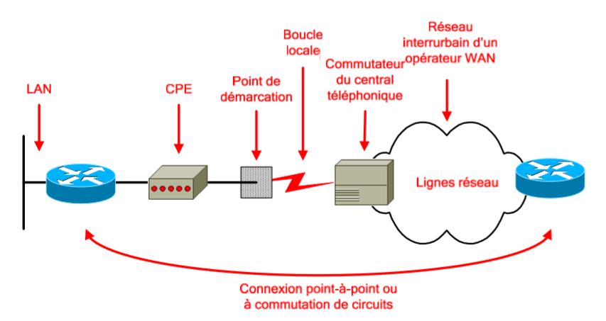
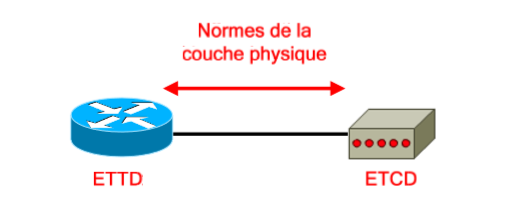
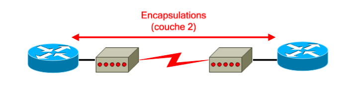
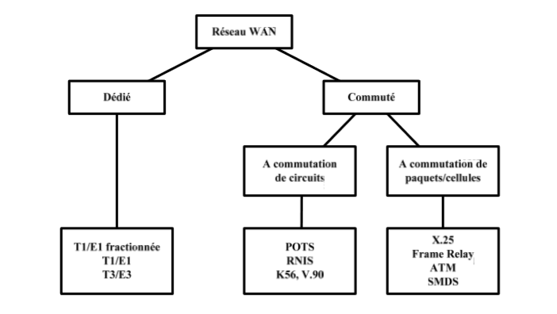
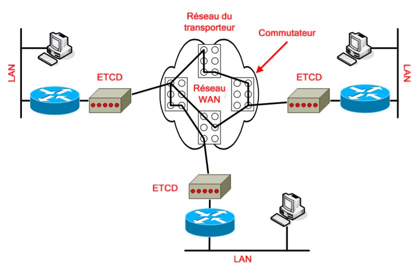

Fonctionnent sur de vastes étendues géographiques.
Utilisent les services d’un opérateur Télécom.
Transportent différents types de trafic (Voix, données, vidéo).
Axés sur les couches physique et liaison de données du modèle OSI.
La boucle locale est la partie située entre le POP du client et le central téléphonique de l’opérateur.
Un réseau WAN, d’un point de vue général, est un ensemble de liaisons reliées aux différents opérateurs, qui sont interconnectés.
Le rôle des opérateurs Télécom est de fournir une communication bout à bout, en utilisant diverses méthodes de commutation (circuits, paquets, cellules), tout en fournissant des services.
Les trois grands types de services fournis par un opérateur Télécom sont :
Établissement de la communication :
Aussi appelé signalisation, ce service permet d’établir ou de mettre fin à la communication entre les utilisateurs du système téléphonique.
Transit des données :
Multiplexage temporel : Principe simple qui permet d’allouer l’intégralité de la bande passante disponible d’une liaison par tranche de temps fixe, affectée à chaque utilisateur.
Partage de bande passante : Il existe une bande passante totale disponible sur le backbone, et les clients qui y sont rattachés se la partagent.
Le chemin de réseau WAN reliant les ETTD est appelé :
Liaison.
Circuit.
Canal.
Ligne.
Le but principal de l’ETCD est de servir d’interface entre l’ETTD et la liaison de communication WAN de l’opérateur :
L’ETTD fournit les données de l’utilisateur (Exemple : routeur).
L’ETCD convertit le format des données de l’utilisateur en un format acceptable par les unités du service réseau WAN (Exemple : modem, unité CSU/DSU, TA, NT1).
Il existe deux types de circuits :
Circuit point-à-point : Circuit physique dédié aux deux extrémités (Exemple : Circuit POTS ou RNIS une fois la commutation de circuits effectuée).
Circuit virtuel : Circuit logique passant au travers d’un nuage (Exemple : Frame Relay, X.25).
Les circuits virtuels se découpent en deux catégories :
SVC : Établi dynamiquement sur demande et fermé en fin de transmission.
Communication en trois phases : Etablissement du circuit, transfert des données et fermeture du circuit. Consomme de la bande passante à cause des différentes phases de la communication.
Coûts liés à la disponibilité (Temps) du circuit réduit.
PVC : Établi en permanence.
Est utilisé pour transmettre des débits de données constantes.
Communication en une phase : Transfert des données.
Consommation en bande passante réduite par rapport à un SVC.
Coûts supérieurs en raison de la continuité de service.
Exemples de lignes WAN et bande passante associée :
Tableau des lignes WAN et leurs bande passante associée
Type de ligne
Bande passante
T1
1.544 Mbits/s
E1
2.048 Mbits/s
E3
34.064 Mbits/s
T3
44.736 Mbits/s
Equipements et dispositifs
Routeur :
Dispositif de routage, offrant différents services dont des ports d’interface de réseau LAN et WAN.
Serveur de communication :
Concentrateur de communications utilisateur entrantes et sortantes.
Commutateur WAN :
Unité multiport qui assure les commutations du trafic WAN.
Modem :
Equipement de conversion d’un signal numérique en un signal analogique par l’intermédiaire du principe de modulation/démodulation.
Unité CSU/DSU :
Interface numérique (ou deux interfaces séparées, si les parties CSU et DSU sont séparées) qui adapte l’interface ETTD à celle d’un ETCD. Cette unité est généralement intégrée au routeur.

Connexion point-à-point ou à commuation de circuits.
CPE :
Equipement placé dans les locaux du client, lui appartenant ou étant loué à l’opérateur (Exemple : modem).
Point de démarcation de service :
Démarcation entre la partie client et la partie opérateur (boucle locale). C’est à ce point que la responsabilité de chaque partie (Client et opérateur) s’arrête.
Boucle locale :
Partie reliant le point de démarcation de service au central téléphonique de l’opérateur.
Commutateur du central téléphonique :
Point de commutation le plus proche du client.
Réseau interurbain :
Unités et commutateur (appelés lignes réseau) situés dans le nuage de l’opérateur.
Normes WAN
Les normes des réseaux WAN décrivent généralement les méthodes d’acheminement de la couche physique ainsi que la configuration exigée pour la couche liaison de donnée, notamment :
L’adressage.
Le contrôle de flux.
L’encapsulation.
Les principaux organismes définissant et gérant les normes WAN sont :
UIT-T
(Union Internationale des Télécommunications - secteur de normalisation des Télécommunications), anciennement appelée CCITT (Comité Consultatif International Télégraphique et Téléphonique).
ISO
(International Standards Organization).
IETF
(Internet Engineering Task Force).
EIA
(Electrical Industries Association).
TIA
(Telecommunications Industry Association).

Les normes de la couche physique.
La couche physique d’un réseau WAN décrit principalement l’interface entre l’ETTD (unité connectée) et l’ETCD (fournisseur) :
EIA/TIA-232 : Similaire à la norme V.24 et anciennement appelée RS-232. Prévue pour les circuits asymétriques dont la bande passante peut atteindre 64 Kbits/s.
EIA/TIA-449 : Version plus rapide que l’EIA/TIA-232 (2 Mbits/s).
V.35 : Décrit un protocole synchrone, utilisé pour la communication dans un réseau de paquets.
X.21 : Pour les lignes numériques synchrones.
G.703 : Connexions utilisant des connecteurs BNC et fonctionnant à des débits E1.
EIA-530 : Deux mises en œuvres électriques des normes EIA/TIA-449 :
RS-422 : Transmissions symétriques.
RS-423 :Transmissions asymétriques.

Processus d'encapsulation (couche 2).
La couche liaison de données définit le mode d’encapsulation des données sur les réseaux WAN :
Frame Relay :
Encapsulation simplifiée.
Dépourvue de mécanismes de correction des erreurs.
Prévu pour des unités numériques haut de gamme.
Transmet les données très rapidement par rapport aux autres encapsulations WAN.
Il existe deux variantes pour cette encapsulation, à savoir Cisco et IET
PPP :
Comprend un champ identifiant le protocole de couche réseau.
Vérifie la qualité de la liaison au moment de l’établissement d’une connexion.
Gère l’authentification grâce aux protocoles PAP et CHAP.
RNIS :
Ensemble de services numériques pour la voix et les données sur le réseau commuté classique.
LAPB :
Encapsulation des paquets à la couche 2 de la pile X.25 sur des réseaux à commutation de paquets.
Egalement sur des liaisons point-à-point, si elles ne sont pas fiable ou possèdent un délai inhérent (Exemple : liaison par satellite).
Apporte la fiabilité et le contrôle de flux sur une base point-à-point.
HDLC :
Peut être incompatible entre fournisseurs car chacun a sa propre mise en œuvre.
Prend en charge les configurations point-à-point et multipoints.
Dérivé du protocole SDLC.
Protocole par défaut pour les interfaces série d’un routeur Cisco.
Extrêmement simplifié : Pas de fonctions de fenêtrage ni de contrôle de flux.
Champ d’adresse contenant uniquement des 1, avec un code propriétaire à 2 octets indiquant le type de verrouillage de trame du fournisseur.
Le protocole HDLC est recommandé sur une liaison reliant deux équipements utilisant IOS. Dans le cas contraire, il est recommandé d’utiliser le protocole PPP.
Classement des différents types de liaison WAN

Arborescence décrivant les différents types de liaison WAN.
Les différents types de liaison WAN habituellement disponibles sont :
Liaisons dédiées (aussi appelées liaisons spécialisées ou lignes louées) :
Fournissent un service continu.
Il s’agit d’un lien physique dédié qui va directement d’un port du routeur client à un port du routeur de l’opérateur, sans passer par un environnement commuté.
Il est nécessaire d’avoir un port par liaison client sur le routeur de l’opérateur.
Fournies par des liaisons série synchrone point-à-point.
Cette liaison point-à-point est utilisée pour :
Une liaison physique directe.
Des liaisons virtuelles constituées de plusieurs liaisons physiques.
Conviennent aux grands volumes d’information et aux trafics constants.
Connexions commutées :
A commutation de circuits :
Commutation physique des centraux téléphoniques afin d’obtenir la liaison point-à-point
A commutation de paquets/cellules :
Commutation « logique » effectuée au niveau de la couche 2 du modèle OSI.

Plan décrivant les Connexions commutées.
Circuit physique dédié par commutation des centraux téléphoniques.
Établi, maintenu et fermé à chaque session.
Établi à la demande.
Sert aussi de ligne de secours aux circuits haut débit.
Offre une bande passante dédiée.
Commutation de paquets/cellules :
Utilisation d’un PVC similaire à une liaison point-à-point.
Possibilité d’acheminer des trames de taille variable (paquets) ou de taille fixe (cellules).
Les unités du réseau partagent une liaison point-à-point unique.
Plus souple et utilise mieux la bande passante que les services à commutation de circuits.